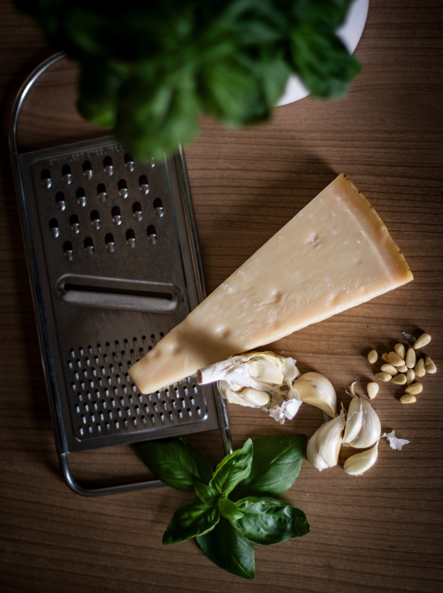
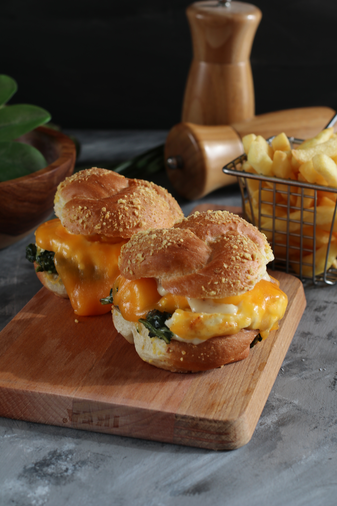
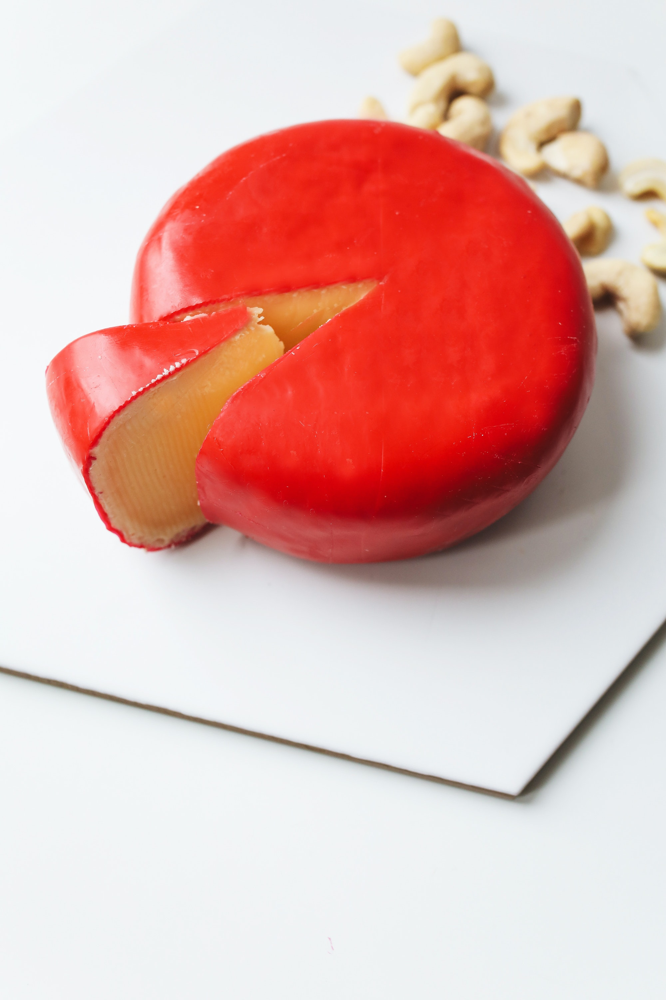

''Why didn't the cheese want to get sliced? It had grater plans''
- ran out of quotes; a cheese pun will have to do
My Cheese Tier List
Mozzarella
Bit of a boring first choice, however, it's many's favorite for a reason. This baby on a pizza rocks.
Unfortunately, pizza is a regular in my diet and pizza without Mozzarella is not a pizza - change my mind.
You can appreciate fresh mozzarella with a sprinkle of olive oil, coarse salt, and pepper, since it has a marginally acidic or lactic taste, however not pungent.
You can make a straightforward Caprese serving of mixed greens or eat it with tomatoes in a sandwich.
Parmesan
Considered to be among the top cheeses by cheese connoisseurs, for me however, it comes in at number 2.
It's usually grated over pasta or soups, it can also be eaten as a snack.

Cheddar
Cheddar cheese is dry and crumbly in texture, with a deep, tangy, nutty flavor. The color varies from ivory to straw to deep yellow.
Cheddar is used to top burgers, as well as in other types of sandwiches.
This one's a classic, timeless.

Gouda
Gouda is a semi-hard to hard cow's milk cheese from the Netherlands.
At the point when Gouda is matured the cheese changes its flavor and surface.
Matured Gouda has a solid flavor, with a sharp yet sweet taste simultaneously.
Melted young gouda is delicious.

Blue Cheese
Cow's milk, sheep's milk or goat's milk + a very distinctive smell.
Lil' spicy, maybe lil' creamy, but it adds soooooo much class to a simple meal.